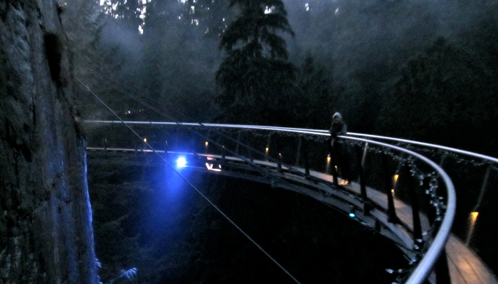

Van-tabulous Time.
Monday, December 5, 2011
Golly! Vancouver has been a crazy intense time.
Job #7 was working with Forum For Women Entrepreneurs in downtown Vancouver. I have to say, it is absolutely beautiful living here. You have the mountains, the ocean, and downtown buildings all in one spot. :) Walking to work in December without snow on the ground and above zero temperatures is truly something worth smiling about.
My time working with FWE was definitely a learning experience. These ladies are very passionate about what they do and make a visible difference in the community through their efforts. FWE is a non-profit focused on creating programs, events, and relationships that support and fuel women entrepreneurs at any stage of their business within the Vancouver area.
The task I was given for the week was to help with some research and strategic planning for the new year. I was pretty stoked about it, I got to work with the Alberta Women Entrepreneurs while I was apart SIFE, and I feel lucky to have been able to support and contribute to the FWE’s efforts - they really do great things.
The office atmosphere was very different than what I have experienced in the past.  Its super small, there is only 4 full-time staff and on my first day, only 3 of them were in the office + 1 other intern. Each of the ladies specialize in an area of work so there isn’t as much open discussion in comparison to other companies I have worked for. This was a major learning curve for me. Now open discussion might not seem like a big deal, but being an employee only for a week... I am able to learn a lot from discussion and office chatter. So it was a bit more challenging for me in the task I was doing. I did however, really appreciate their time and enjoyed learning from the women on more one-on-one conversations. Something that made me smile - Ashlee one of my co-workers was calling all these entrepreneurs who had been accepted into one of FWE’s top programs with only 15 spots available. Listening to the reaction over the phone from some of these participants was like listening to someone who won American Idol or something! Loudly talking, cheering, and thanking profusely on the phone. :) That kind of reaction brings a smile to my face.
Its super small, there is only 4 full-time staff and on my first day, only 3 of them were in the office + 1 other intern. Each of the ladies specialize in an area of work so there isn’t as much open discussion in comparison to other companies I have worked for. This was a major learning curve for me. Now open discussion might not seem like a big deal, but being an employee only for a week... I am able to learn a lot from discussion and office chatter. So it was a bit more challenging for me in the task I was doing. I did however, really appreciate their time and enjoyed learning from the women on more one-on-one conversations. Something that made me smile - Ashlee one of my co-workers was calling all these entrepreneurs who had been accepted into one of FWE’s top programs with only 15 spots available. Listening to the reaction over the phone from some of these participants was like listening to someone who won American Idol or something! Loudly talking, cheering, and thanking profusely on the phone. :) That kind of reaction brings a smile to my face.
FWE has an exciting year ahead of them as they are currently in the process of re-branding their website and programs. Something I really enjoyed during my time there was being able to sit in on the board of directors meeting and hear as well as contribute, to the direction and vision they are taking. :)
Some of the other things I did during my time in Vancouver was attend Growlabs first ever Demo Day. Growlabs is an incubator in Vancouver that hosts space for start ups to develop their businesses. Now, the reason why this was so awesome was because while I was in Silicon Valley working with DealMaker Media... I had the opportunity to critique and coach Ecquire - a startup located in Vancouver that was preparing their pitch to investors at this Demo Day! The CEO of DealMaker is a partner in Growlabs Vancouver and invited me to come by and see the team pitch.
I seriously suffer from “proud mom” syndrome (I get it now mom) But when Ecquire pitched, I was SO proud of them and the advancements they had made since the first time I had heard them. :) They did great and got some funding from their pitch!
What made attending this event really special, was a guy came up to me and asked if I was “Maeghan Smulders”..... I kind of looked at him embarrassedly and said yes... then he said he had read the participants list, saw my name, googled ProjectONE12 and wanted to meet me. So we chatted for a bit and I learned he was one of the other companies pitching at Demo Day, his company is Loupe - a photo sharing site that is super cool. We talked about everything from starting a business, to getting an MBA, doing research, to how fast we could text (a competition was involved... and my skills with an iphone beat out his with an android :D #winning)
He then invited me to go out for dinner with the rest of the startups and bonded over tacos and crazy stories. I feel really lucky to have been able to get to know them. One of the things I love so much about everyone in the tech sector.. is they have the most random stories to how they got to where they are today. :) People are so willing to help others achieve what they are working for, and are some of the most creative people I have met.
Vancouver has been a huge growing point for me - personally and professionally. I’m almost nervous to go home for Christmas and have my parents not recognize the new outlook and confidence I have in life. It took a lot to get to where I am today, but I am so grateful for the adventures I have been able to take, as well as the stories I have been able to hear from people who are so willing to share them with me.
I want to say a HUGE thank you for reading my blog, hearing my story, sending me emails, shouting out on twitter, liking/commenting on facebook and more importantly, the kind words and support that you are sharing with me. People are amazing, and although this trip has had its ups and downs.... it has been a journey that will shape and stick with me for the rest of my life. So thank you so much for being a part of that with me. I appreciate it.
I have 3 more companies left to reach my goal of 10.. wow. That is crazy!! January 20, 2012 is my 112th day... I feel like a chapter of my life is reaching its end, and I am so optimistic and stoked to see what I can create in the next chapter :)
Stay awesome. Much<3
Just Maeghan

living life on the edge.